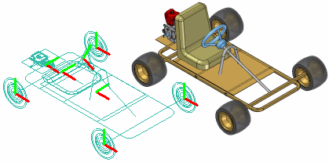
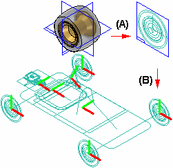
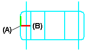
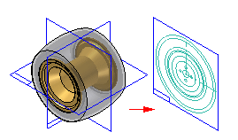
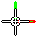
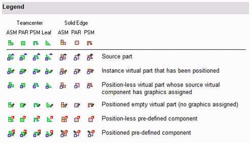

Creating and publishing Virtual Components
When you start a new design project, you may want to define the overall product structure for the project before creating new Solid Edge documents, or before positioning 3D geometry for existing Solid Edge documents in the top-level assembly. In effect, you use a top-down design approach to define the assembly structure using virtual components as place holders until real components are defined.
You can use the Virtual Component functionality in Solid Edge or in Teamcenter to define the assembly structure for a new design project.
When you have finished defining the assembly structure, you can publish the assembly. Publishing the assembly creates the new Solid Edge documents required, copies assembly sketch geometry to the new documents, and adds the 3D geometry for existing Solid Edge documents to the assembly.

Virtual components in Solid Edge
The basic workflow for creating and publishing a virtual assembly in the unmanaged Solid Edge environment is:
-
Define the virtual components you need.
-
Add existing documents to the virtual assembly structure.
-
Assign 2D geometry to individual virtual components.
-
Position virtual components.
-
Publish virtual components.
Virtual components in a Teamcenter-managed Solid Edge environment
While you can use the virtual component functionality in Solid Edge to develop unmanaged assembly structures, most often in a managed environment, your product structure is created and modified in another Teamcenter PDM client such as Teamcenter Structure Manager. Then the empty items that are created in the PDM client are opened for further development along with the remaining structure in either Solid Edge or Structure Editor.
As a best practice, you should choose between using Solid Edge Virtual Components and a workflow where Teamcenter empty items are created in a PDM client. Using both in the same structure is not recommended.
After you finish defining the assembly structure, you can publish the virtual components, converting non-modeled objects into physical documents containing Solid Edge 3D datasets. Publishing the components assigns the Solid Edge template (part, assembly, sheet metal or weldment), and Teamcenter attributes to the real document.
The basic workflow for working with Teamcenter-managed virtual assembly is:
-
Create the virtual components you need, using a Teamcenter PDM client.
-
Open the structure in Solid Edge where you can view the structure in PathFinder.
-
Add existing documents to the virtual assembly structure.
Note:If you are working in Solid Edge in the Teamcenter mode, you cannot place unmanaged parts into a Teamcenter-managed virtual component structure.
-
Publish virtual components.
-
Upload the real document into the Teamcenter database.
Defining the assembly structure
The Virtual Component Structure Editor command defines the assembly structure for a new design project in an unmanaged environment. When you click the Virtual Component Structure Editor command, the Virtual Component Structure Editor dialog box is displayed.
The Virtual Component Structure Editor defines the name and document type for new virtual components, and allows you to drag any existing Solid Edge documents into the virtual assembly structure.
-
Defining new virtual components
You use the right pane on the Virtual Component Structure Editor to define virtual components and organize the assembly structure. The Component Type options on the right pane of the Virtual Component Structure Editor define the document type for new virtual components:
-
Assembly components
-
Part components
-
Sheet metal components
The Name option assigns a name to the virtual component you are creating. You can select a default name from the list, or type the name you want in the Name box.
You can customize the Names list by editing VCNames.txt in the Solid Edge Preferences folder. Separate sections in VCNames.txt define unique virtual component names for part, sheet metal, and assembly components.
After you define the component type and name, you can click the Add Virtual Component button on the Virtual Component Structure Editor dialog box to add the virtual component to the tree structure list. You can also add a virtual component to the tree structure list by pressing Enter after typing the virtual component name.
Note:When you create a virtual component, it has no physical position and no associated graphics. Later, you can position the virtual component and/or assign graphics to it.
You can use the Promote Component and Demote Component buttons to further define the assembly structure. For example, if you want to move a component from a virtual subassembly into the next higher level assembly, you can select the component and click the Promote Component button.
You can also drag virtual components within the Virtual Component Structure Editor dialog box to rearrange the assembly structure. For example, you can drag a virtual part from one virtual subassembly to another virtual subassembly.
-
-
Adding existing documents to the virtual structure
You can also place existing Solid Edge documents into the assembly structure using the Virtual Component Structure Editor dialog box.
The left pane on the Virtual Component Structure Editor dialog box browses to and selects existing documents on your computer or another computer on your network. If you are working in Teamcenter mode, you can select existing documents from your Teamcenter database.
You can place an existing document into the virtual assembly structure in one of two ways: as a predefined component or as a real component.
-
Predefined components
Predefined components are virtual components that are based on an existing document. You cannot place 3D geometry using a predefined component, but you can create 2D geometry in the parent document (A), then position the 2D geometry in the assembly sketch (B). You can reuse existing documents in new design projects without the overhead of 3D geometry.

When you clear the Add As Real Component option on the Virtual Component Structure Editor, then drag an existing component into the right pane of the structure editor, the component is placed as a predefined component. If you want to add the document to a virtual subassembly, position the cursor over the virtual subassembly when dropping the predefined component.
Predefined components are typically purchased or released parts that are not subject to significant changes.
-
Adding real components
When you set the Add As Real Component option on the Virtual Component Structure Editor before you drag an existing document into the virtual assembly structure, the 3D geometry associated with the component is added to the assembly. When this option is set you can only place the component in the top-level assembly.
The component is placed in the assembly hidden, with no relationships applied, and is oriented in the assembly by aligning the base reference planes of the component with the base reference planes in the assembly.
You can position the real component within the assembly sketch using assembly relationships such as mate and align, or 2D relationships and dimensions such as Connect and Distance Between.
-
-
Copying virtual and predefined components
You can specify that the same part or subassembly occurs more than once using the Virtual Component Structure Editor dialog box. To specify that a component occurs more than once, you can select an existing virtual component or predefined component, then click the Copy Definition command on the shortcut menu.
This copies the component name and component type to the Name box and Component Type list. You can then press Enter or click Add Virtual Component to add the component to the tree structure list. You can also add the same component multiple times by pressing Enter repeatedly.
-
Saving the tree structure
When you click the OK button on the Virtual Component Structure Editor dialog box, the virtual assembly structure you defined is added to the PathFinder tab. You can make changes to the virtual assembly structure later using the Virtual Component Structure Editor dialog box.
You can dismiss the Virtual Component Structure Editor dialog box without saving changes by clicking the Cancel button.
Assigning sketch geometry to Virtual Components
You can assign 2D sketch geometry from the assembly layout to a virtual component. You can create the 2D geometry before or after you define the assembly structure.
Assigning geometry to a virtual component defines its size and position in the assembly sketch. You can only assign geometry to one occurrence of a particular virtual component.
When you assign 2D geometry to a virtual component, it becomes the primary, or source component. You can edit the sketch geometry associated with the source component directly. If there are additional occurrences of a particular virtual component, they become secondary or instance components.
The sketch geometry for an instance component is an associative copy of the sketch geometry of the source component. When you update the sketch geometry for a source component, the sketch geometry for the instance components updates automatically. You cannot modify the sketch graphics for an instance component directly.
You assign geometry to a virtual component using the Edit Definition command on the Assembly PathFinder shortcut menu. This command is available only when an assembly sketch window is open.
When you click the Edit Definition command, a command bar is displayed so you can select the geometry and define an origin. You can select the 2D sketch geometry using the cursor or by dragging a fence. When you finish selecting geometry, click Accept or right-click to proceed to the Orientation Step.
The Orientation Step defines the origin location for the virtual component and the reference plane that the 2D sketch graphics are placed on when you publish the virtual component. You can specify that the graphics are placed on one of the three base reference planes.
When defining the origin you can specify that the origin is based on a keypoint or a free space point. With either method you must also define the x-axis direction. When you click the Finish button, a symbol is displayed that represents the origin (A) and x-axis direction (B) for the virtual component geometry.
You can constrain to the origin point on a virtual component to position it within the assembly.

Creating sketch geometry for predefined Virtual Components
You create the sketch geometry for a predefined virtual component by opening the parent document, then using the Component Sketch command to create a component sketch.

There are two types of graphics you can create in a component sketch: component image graphics, and wireframe graphics. Component image graphics are created using the Component Image command. This command creates a 2D representation of the visible edges on a part.
Component image graphics are not individually selectable in the assembly sketch, but provide a reference envelope.
You supplement the component image graphics with wireframe graphics you create using the Project to Sketch command or drawing wireframe graphics manually. The wireframe graphics can be selected and used for constraining the component sketch in the assembly sketch.
You typically would create both types of graphics for a component sketch. In some cases, you may only create component image graphics, then use the virtual component symbol origin to constrain the predefined component in the assembly sketch.
Using too many wireframe graphic elements can impact performance when placing the component sketch in the assembly sketch.
Updating sketch geometry for predefined Virtual Components
As discussed earlier, predefined components are typically purchased or released parts. If the parent 3D geometry for a predefined component sketch changes, you must delete the component image graphics and create new graphics using the Component Image command.
You can then open the assembly sketch and select the predefined component within PathFinder. Click the Update Component command on the shortcut menu to update the predefined component graphics in the assembly.
Replacing predefined components
You can use the Replace command on the shortcut menu when a sketch is active to replace a predefined component with another Solid Edge document you specify. You can select the predefined component in Assembly PathFinder or the sketch window.
Displaying Virtual Component sketch geometry
Before you assign assembly sketch graphics to a virtual component, you use the Show and Hide commands on the Layers tab shortcut menu to display and hide the assembly sketch graphics. An effective layer management scheme can make working with complex assembly sketches more productive.
After you assign assembly sketch graphics to a virtual component, you can use the Show and Hide commands on the PathFinder shortcut menu to display and hide the virtual component sketch graphics. For example, you can select the virtual component in PathFinder, or in the graphics widow, then click the Show and Hide commands on the shortcut menu.
You control the display of dimensions you apply to the sketch geometry by showing and hiding the layers on which the dimensions were created, both before and after you assign graphics to a virtual component.
Because geometric relationship handles do not reside on a layer, you always control their display using the Relationship Handles command on the Tools menu when in the assembly sketch.
Positioning Virtual Components
You use the Position Virtual Component command on the PathFinder shortcut menu to position virtual components. This command is only available when you are editing an assembly sketch. You can position an empty virtual component (a virtual component that has no geometry assigned), an instance virtual component, or a predefined component.
You can position a virtual component by dragging it from the PathFinder tab and dropping it into the sketch window.
As discussed earlier, source virtual components are positioned as part of the process of assigning geometry.
-
Positioning empty Virtual Components
If you have not assigned geometry to any occurrences of a particular virtual component, you can select the virtual component in PathFinder, then click the Position Virtual Component command on the shortcut menu. The virtual component symbol is attached to the cursor so you can position the virtual component on the assembly sketch.

The symbol represents the approximate position for the empty virtual component in the assembly. Later, you can select the empty virtual component entry in PathFinder and use the Edit Definition command to assign geometry to one occurrence of the empty virtual component. This instance of the virtual component becomes the source virtual component.
The other occurrences of the virtual component update with the graphics you assigned to the source component, and they become instance components.
You can then add relationships and dimensions to the sketch geometry to precisely locate the virtual component in the assembly sketch.
-
Positioning instance Virtual Components
After you assign sketch geometry to a virtual component, it becomes the source component for additional occurrences of that virtual component. You can select another occurrence of the virtual component in PathFinder and use the Position Virtual Component command on the shortcut menu to position the virtual component on the active assembly sketch.
A copy of the sketch graphics that were assigned to the source component is attached to the cursor. As discussed earlier, the sketch geometry for an instance component is an associative copy of the sketch geometry of the source component. You can apply relationships and dimensions to the sketch graphics or to the virtual component symbol to precisely position the instance component on the assembly sketch.
Determining the status of a Virtual Component
The symbols in PathFinder and the Virtual Component Structure Editor dialog box reflect the current status of the virtual components in the assembly.
Teamcenter-managed non-modeled nodes can either be assembly or leaf nodes. Assembly nodes contain references or children, while leaf nodes do not contain references or children. The symbols in PathFinder, Assembly Reports, and the Property Manager dialog box reflect the state of the virtual components in the assembly. The following table explains the symbols used:

The Teamcenter Status and Checked Out By information displayed in PathFinder is not available for an object until it is published.
Publishing Virtual Components
When you are ready to create the document set for the new design project, you can click the Publish Virtual Components command. You can then use the Publish Virtual Components dialog box to specify the target folder and template you want to use to create the document set.
In an unmanaged Solid Edge environment, when you click Publish, all virtual components are published at one time. The unmanaged Solid Edge documents are created using the names, folder path, and templates you specified.
If you have associated 2D assembly sketch graphics with source virtual components, the sketch graphics, including dimensions and relationships, are copied to the proper document as sketches. The sketch graphics are positioned in the new document using the Publish On option you specified on the Edit Definition command bar when you assigned the sketch geometry to the source component.
There is no associative link between the sketch graphics in the original assembly and the sketch graphics copied to the new documents.
The sketch graphics associated with instance virtual components are deleted from the source assembly.
You cannot publish a virtual component to the same folder as a real component of the same name. For example, if you add both a predefined component named bolt.par and a virtual component named bolt to the virtual component structure, they are not allowed to reside in the same folder when you publish the virtual components.
Conflicts such as these are indicated in the Publish Virtual Components dialog box using red text and an exclamation mark (!). In this example, you can resolve the conflict by renaming the virtual component or by specifying a different folder for the virtual component.
If you do not rename the virtual component or specify a different folder, the existing document will be used and the new document for the virtual component will not be created. The existing part is positioned as defined by the virtual component sketch, but the sketch geometry is not added to the existing document.
-
Publishing predefined components using the simplified representation
If a simplified representation of a part or subassembly exists, you can specify that the simplified representation is used for predefined components. When you set the Publish predefined Components Using Simplified Representations option on the Publish Virtual Components dialog box, the simplified representation is used.
This can improve processing time and reduce document size. When you publish a simplified representation of a subassembly, the subassembly is published as a single unit and the assembly structure is not loaded into memory. The assembly structure is also not displayed within PathFinder.
You can use commands on the PathFinder shortcut menu to specify whether the simplified or as designed version of the parts and subassemblies are displayed. For more information on working with simplified parts and assemblies, see the Simplifying Parts and Simplifying Assemblies Help topics.
Publishing documents in the Teamcenter-managed environment
When you are ready to create the document set for the new design project, you have three options. You can perform an ad hoc publish on a single object by selecting the virtual component in PathFinder and dragging it into the Solid Edge graphic window. You are then prompted to choose the template for the object to give it a Solid Edge dataset, and then the New Document dialog box displays so you can check in the real document.
Another option is to use the Publish Virtual Components command. You can then use the Publish Virtual Components dialog box to select components for either a partial or full publish, and to determine the template you want to use to create the document.
During a partial publish, you select a component of an assembly for publishing by selecting the associated check box. Then you are given the opportunity to assign a template. The New Document common property dialog box assigns Teamcenter attributes, and the physical document is created with a Solid Edge dataset.
A full publish involves selecting all components of a structure. The entire virtual structure is published at the same time. You use the New Document common property dialog box to assign Teamcenter attributes, and the documents are created with Solid Edge datasets.
In all three cases, if a virtual component is denoted as an assembly, only Solid Edge assembly templates are displayed during template selection. If the virtual component is a leaf node (one that has no references or children), then you can choose from the 3D Solid Edge templates during template selection.
Virtual Components and assembly reports
If the assembly for which you are creating a report contains virtual components, you should always use the Reports command in the Assembly environment.
When you run the Reports command from Windows Explorer on an assembly that has virtual components, the virtual components will not be contained in the report. If the assembly contains only virtual components, a message may be displayed that states that no parts are in the file.
When you run the Reports command from Windows Explorer on an assembly that has virtual components, the Assembly Report shows Teamcenter virtual components and uses the same symbols for identification that you see in PathFinder.
Assigning properties to Virtual Components
When an active document contains a virtual component, you can use the Property Manager command to modify existing properties or create new properties for the virtual component in Solid Edge.
Virtual components created in Teamcenter are shown, but are read-only and cannot be edited.
When you select the Property Manager command, the Property Manager dialog box is displayed for editing property values. Any properties that you cannot edit are disabled and appear in gray.
To edit a value, click the appropriate property cell and type in the new value. When you edit a property, if the document containing the property is a managed document, it is checked out to prevent others from making changes. After you edit a property value, the property cell is underlined to indicate that it has been changed. The cell remains underlined until you click the Save button to save the changes or click the Restore button to set the value back to the previous value. You can use the Copy, Cut, and Paste buttons to edit information between cells. When you click OK, the property changes are written back to the document in memory. The changes are not written until you save the document.
When you publish the virtual components, the properties you assigned to the virtual components are added to the new documents.
For more information on editing document properties, see Document Properties.
How do I
Create a virtual component sketch for a documentCreate virtual components
Create a component image
Assign geometry to a virtual component
Position a Virtual Component on a Sketch
Specify whether a component is driven or driving
Change the component type of a virtual component
Publish virtual components
Look up more details
Virtual Components Structure Editor commandVirtual Component Structure Editor dialog box